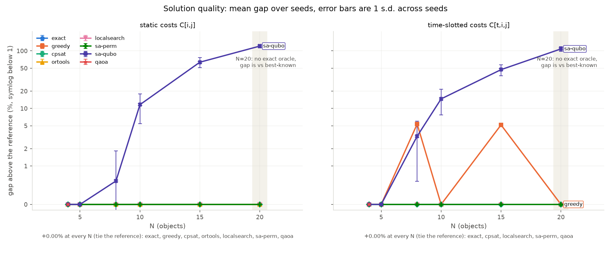
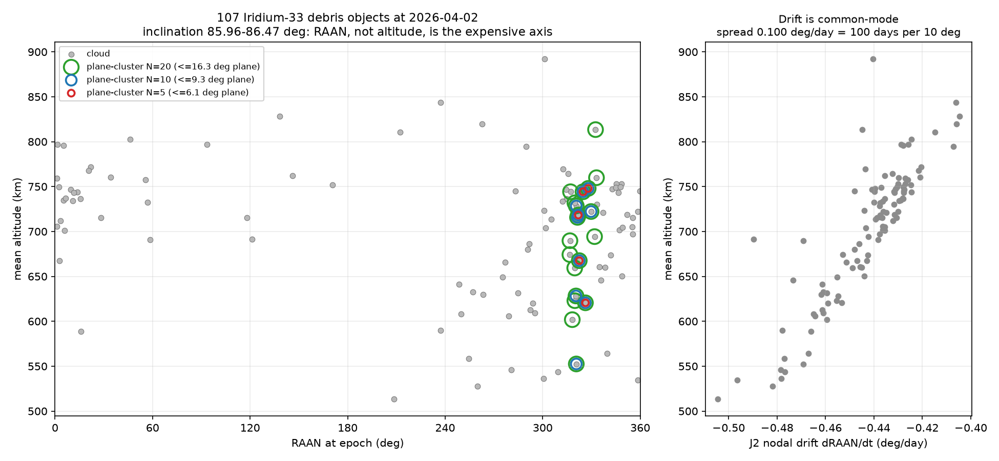

The result

Three solvers tie the reference on all twelve instances:
cpsat, local-search, and — nearly everywhere — plain nearest-neighbour
greedy. The QUBO-based annealer is the worst solver in the benchmark at every size
above N=5.
| instance | N | reference (km/s) | greedy | local-search | cpsat | ortools | sa-perm | sa-qubo | qaoa |
|---|---|---|---|---|---|---|---|---|---|
| n4_static | 4 | 0.5946 | +0.00% | +0.00% | +0.00% | +0.00% | +0.00% | +0.00% | +0.00% |
| n5_static | 5 | 0.8296 | +0.00% | +0.00% | +0.00% | +0.00% | +0.00% | +0.00% | refused |
| n8_static | 8 | 1.0824 | +0.00% | +0.00% | +0.00% | +0.00% | +0.00% | +0.61% | refused |
| n10_static | 10 | 1.3268 | +0.00% | +0.00% | +0.00% | +0.00% | +0.00% | +11.64% | refused |
| n15_static | 15 | 2.0151 | +0.00% | +0.00% | +0.00% | +0.00% | +0.22% | +63.57% | refused |
| n20_static best-known | 20 | 2.4485 | +0.00% | +0.00% | +0.00% | +0.00% | +12.08% | +121.04% | refused |
| n4_td30d | 4 | 0.5205 | +0.00% | +0.00% | +0.00% | refused | +0.00% | +0.00% | +0.00% |
| n5_td30d | 5 | 0.8314 | +0.00% | +0.00% | +0.00% | refused | +0.00% | +0.00% | refused |
| n8_td30d | 8 | 1.1124 | +5.37% | +0.00% | +0.00% | refused | +0.00% | +3.30% | refused |
| n10_td30d | 10 | 1.5165 | +0.00% | +0.00% | +0.00% | refused | +0.00% | +14.65% | refused |
| n15_td30d | 15 | 2.1855 | +5.18% | +0.00% | +0.00% | refused | +2.77% | +47.20% | refused |
| n20_td30d best-known | 20 | 3.6723 | +0.00% | +0.00% | +0.00% | refused | +18.07% | +108.17% | refused |
refused is a recorded miss with a stated reason, not a
crash and not a blank: qaoa above N=4, ortools on every time-dependent
instance, exact above N=18.
The QUBO encoding, not the annealing, is what fails
sa-perm and sa-qubo minimise the same objective with the same
annealer budget — the same reads, the same sweeps, and N² proposed moves per sweep on both
sides. They differ only in what they search: a permutation, or N² binaries plus penalty terms.
| instance | sa-perm | sa-qubo | both at |
|---|---|---|---|
| n10_td30d | +0.00% | +14.65% ± 6.95 | 500 reads × 1000 sweeps |
| n15_td30d | +2.77% ± 1.04 | +47.20% ± 10.27 | 112.5 M proposed moves |
| n20_td30d | +18.07% ± 6.65 | +108.17% ± 9.67 | 200 M proposed moves |
Both proposal counts are recorded in each solver's metadata and the matched-budget formula is asserted in the test suite, so the claim is auditable rather than assertable. The penalty terms are not the culprit either: raw feasibility is 1.00 at every penalty weight at or above the provable threshold. The constraints are satisfied; the objective is not being optimised.
n8_td30d at +5.37% and
n15_td30d at +5.18% — are the entire headroom this benchmark contains.The problem
Given N catalogued fragments of the Iridium-33 debris cloud and a delta-v cost to transfer between any two, find the visiting order that costs the least. The 2009 Iridium-33 / Cosmos-2251 collision left more than 2,000 trackable fragments in low Earth orbit; active debris removal is limited by propellant, so the order in which targets are visited decides whether a mission is affordable at all.
It is an open path, not a TSP tour. The servicer starts at the first object and stops at the last — no return leg, no depot, exactly N-1 legs. The textbook TSP QUBO would charge the mission for a leg it never flies.
The physics
Orbits come from TLEs propagated with SGP4 to the snapshot's median TLE epoch — never a hardcoded date. Transfer cost is a two-burn impulsive manoeuvre between circular orbits at each object's mean semi-major axis, with the plane change folded into the burns and the split between them solved numerically.

Because a median leg costs 5.80 km/s — more than a launch to GEO — full-cloud tours
are physically absurd. Instances are built by a plane-cluster rule fixed
before any solver runs, which never looks at delta-v or at which solver wins.
Why the first version was wrong
This project began as an altitude-only tool. Three things were wrong with it, all three visible in the git history rather than reconstructed.
- The propagation ran ~15 months backward. A hardcoded epoch of 2025-01-01 against a TLE set whose median epoch is 2026-04-02 — 455 days in the wrong direction. It moves mean altitudes by up to 108 km, and SGP4 refuses outright on one of the 107 objects.
- Altitude was the instantaneous radius, with the wrong Earth.
|r| − 6371 kmoscillates once per orbit (285 km peak-to-peak for the most eccentric object) and mixes in a spherical radius where SGP4 uses WGS72. Per-object disagreement against the mean semi-major axis reaches 144 km. - The benchmark was degenerate — the one that actually mattered. Every cost derived from one scalar per object, so the objects lie on a line, the optimum is a sort, and greedy tied the exact optimum at 0.1262 km/s. A benchmark whose baseline is provably optimal measures nothing.
The degeneracy is locked down rather than deleted: a test still asserts that sorting by altitude is optimal under the altitude-only model, so it cannot quietly return.
The QUBO
One binary per (object, position) pair — x[i,p] = 1 when object
i is visited p-th — so N² variables, with penalty terms forcing a
permutation matrix. The objective sums N-1 leg terms, not N: open path, no wrap-around.
Because the QUBO's position index and the instance's time slot are the same integer, a
time-dependent instance produces a QUBO of exactly the same shape.
The qubit wall
The position encoding needs N² qubits, and a dense statevector is 2(N²) complex
amplitudes: N=5 is 512 MB before the optimiser evaluates anything, and N=6 is 1 TB. So
qaoa reaches N=4 in this benchmark and nothing larger, while exact — a
dynamic program from 1962 — reaches N=18 on the same laptop. The quantum solver's ceiling
sits an order of magnitude below the classical oracle's, on the same problem, in the same
encoding. That gap is the headline quantum result here.
At N=4 the +0.00% gap in the table above is not evidence of anything: there are 24 possible sequences among 216 bitstrings, and best-of-4096-shots plus repair recovers the optimum from uniform random bits. The only numbers at that size with any signal are measured against chance:
| instance | raw feasibility | uniform baseline | P(optimal bitstring) | uniform P(optimal) | mean Δv, feasible samples | mean Δv, random permutation |
|---|---|---|---|---|---|---|
| n4_static | 0.0344 ± 0.0251 | 0.000366 | 0.0049 ± 0.0041 | 0.0000305 | 0.9586 | 1.0261 |
| n4_td30d | 0.0270 ± 0.0229 | 0.000366 | 0.0016 ± 0.0017 | 0.0000153 | 0.9103 | 0.9735 |
One real effect and one disappointment. QAOA does concentrate amplitude on the feasible subspace — by roughly 94× and 74× — and on the optimal bitstring by 162× and 102×. But within the feasible set it barely optimises: the mean delta-v of its feasible samples is only 6.6% and 6.5% better than a uniformly random permutation. It is finding permutations, not good permutations.
Every QAOA runtime in this project is classical statevector simulation time (64.3 s ± 7.3 per run at N=4). It is not a quantum runtime, and no quantum hardware was involved.
Reproduce it
From a clean clone, three commands. No network access is required — the TLE snapshot, the instance family and the canonical results run are all committed.
uv sync --all-extras
uv run dextrivia bench --out results/my-run
uv run python scripts/plot_benchmark.py results/my-runLimitations
- The cost model still ignores phasing — the single largest omission. The servicer is assumed to arrive at the right point in the target's orbit for free.
- Only two cells in the whole benchmark have headroom. Greedy ties the optimum on ten of twelve instances, so most of the table ranks nothing. A stronger claim about any solver needs harder instances, not more seeds.
- N=20 is uncertified. Held-Karp cannot run there, and CP-SAT's lower bound is still 0.0 at its time limit, so "best-known" at N=20 is exactly that and nothing more.
- One QUBO formulation, one annealer, one QAOA depth range. These results bound this encoding on this problem, not quantum optimisation in general.
- No conjunction-risk weighting, propellant budget, time windows, or vehicle constraints.